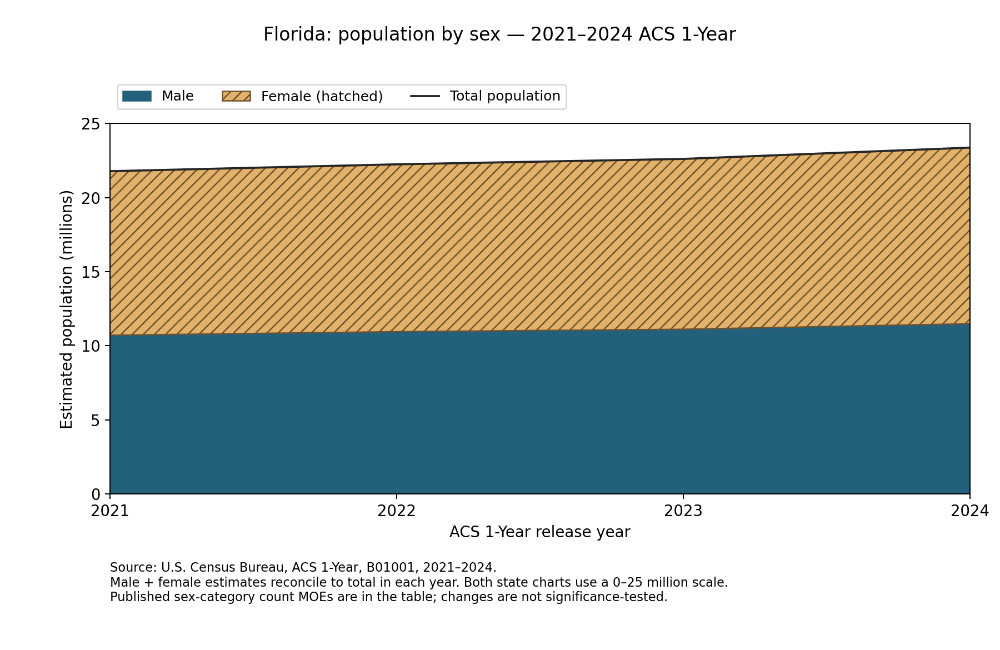
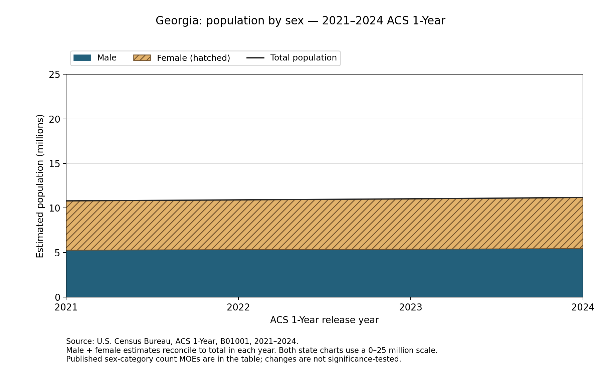

Apply the Census Bureau Statistical Quality Standards, revised September 29, 2026, within their stated scope. The chart-selection advice and implementation checks on this page explain practical design choices; they do not create additional agency mandates. Treat Essential items as the core design conditions for this chart, and confirm formal applicability through the program’s review process.
Coordinate this page with Titles and Subtitles, Legends, Sources, and Visualizing Uncertainty. Keep detailed component guidance in those shared pages rather than duplicating it here.
A stacked area chart shows how several non-overlapping components contribute to a total across a naturally ordered variable, usually time. Each series forms a band above the preceding series; the top boundary indicates the overall total. In a 100% stacked area chart, each period is normalized to 100%, emphasizing composition rather than absolute magnitude.
Stacked areas are not the same as overlapping transparent area charts: the height of a stacked band represents its value, while overlapping areas share a baseline and can obscure one another. Do not interpret band boundaries as independent trends when they are cumulative sums.
| Analytical question | Preferred form | Reason |
|---|---|---|
| How does the total change, and what contributes to it? | Stacked area (counts) | Shows magnitude and composition together |
| How does the mix change independent of total size? | 100% stacked area | Standardizes each period to 100% |
| How does each subgroup change independently? | Line graph or small multiples | Avoids unequal and shifting baselines |
| What is the exact value of each component? | Accessible data table | Supports precise comparisons |
Data should contain one ordered period, a clearly defined total, and
mutually exclusive components for each period. Validate nonnegative
values, unique period–geography records, missing observations, common
units, stable category definitions, and
sum(components) = total. When converting to percentages,
use the same total for all components in a period; check that shares sum
to 100% subject to rounding.
ACS considerations: ACS estimates have sampling uncertainty. Preserve published margins of error, identify the ACS release type, and avoid treating stacked estimates as exact population counts. Margins of error cannot simply be added to produce a total MOE. Standard ACS 1-Year data are not available for 2020; do not silently connect 2019 to 2021. Review year-to-year comparability before interpreting changes. See Census ACS 2020 guidance.
Use a stable, thoughtfully ordered category sequence; for a two-layer chart, keeping the larger or more stable category at the base often makes the shape easier to read. Avoid reordering layers by year. Use distinguishable fills, clear boundaries and direct category labels where possible. Color alone is insufficient; consider textures/hatching and a corresponding legend. A short figure description should report the overall trend and identify layer order. Provide a structured table containing exact values and the source’s statistical uncertainty. Verify contrast, readability at 200% zoom, and the accessibility of the published HTML with appropriate tools and assistive technologies; a generated table or alt-text draft is not proof of Section 508 compliance.
Use these comparisons to connect each design choice with its effect on interpretation.
| Problematic approach | Why it matters | Preferred approach |
|---|---|---|
| Categories overlap or omit part of the named total | The top boundary is not the claimed total | Use a verified partition, add an explicitly defined remainder where justified, or choose separate lines |
| A middle layer is read from its upper boundary | That boundary includes lower layers | Read band thickness; use small multiples when independent component trends are the main question |
| A 100% stack is described as population growth | Normalization conceals total magnitude | Label the percentage denominator and provide totals, or use a count-based stack |
Test the chart at its intended display size and with enlarged text. Follow the reading sequence from title to explanation, figure, table, and source. Check that labels and meaningful marks remain distinguishable without color and that any controls can be operated by keyboard with visible focus. Read the explanation and table with a screen reader to confirm that they convey the same measures, units, missing-data conditions, and important relationships as the chart.
Use automated and manual accessibility testing together. A downloadable CSV supplies values but does not replace the chart’s explanatory narrative; see USWDS visualization guidance. Record the page/version, tool or assistive technology, result, and corrective action. Apply the sponsor’s agreed accessibility baseline rather than treating a palette simulation as a conformance test.
The following examples are retained from the Census guidance. Their datasets, periods, universes and design lessons remain distinct. Some illustrate limitations or less-preferred choices; inclusion does not certify every design or its accessibility.
Example 1: Married Couple Place of Birth and Current State of Residence:1900-2018
The full workbook can be found at https://www.census.gov/library/visualizations/interactive/married-couple-place-of-birth-and-current-state-of-residence-1900-2018.html
This chart is a good example of the following: * The Y axis starts at zero and high contrast colors are used for the different shaded areas of the chart. * The bands have a consistent order. Read each band by its thickness, not its cumulative upper boundary; consider separate lines or panels when individual trends are the main question.
2021–2024 ACS population composition. B01001: validate that the published sex-category estimates reconcile to total population in every state/year.
What this adds: Adds explicit partition checks and distinguishes magnitude from 100% composition.
Run evidence: The supplied November 10, 2026 run generated this example. Saved-data arithmetic and chart layout were reviewed for this package; published-page accessibility testing remains outstanding.


Source and interpretation: U.S. Census Bureau, 2021–2024 ACS 1-Year Estimates, Detailed Table B01001. The published male and female estimates form an exclusive and exhaustive partition of each state-year total. The supplied run completed November 10, 2026 (UTC).
Both figures use a common 0–25 million scale. The total is the top boundary; each category’s count is its band thickness. This is a count display, not a 100% composition chart. Published sex-category count MOEs remain in the table; changes have not been significance-tested.
Selected values (rounded for display; CSV retains exported precision):
| State | Year | Male estimate | Female estimate | Total estimate |
|---|---|---|---|---|
| Florida | 2021 | 10,714,520 | 11,066,608 | 21,781,128 |
| Florida | 2022 | 10,953,468 | 11,291,355 | 22,244,823 |
| Florida | 2023 | 11,116,575 | 11,494,151 | 22,610,726 |
| Florida | 2024 | 11,488,598 | 11,883,617 | 23,372,215 |
| Georgia | 2021 | 5,270,144 | 5,529,422 | 10,799,566 |
| Georgia | 2022 | 5,323,951 | 5,588,925 | 10,912,876 |
| Georgia | 2023 | 5,378,504 | 5,650,723 | 11,029,227 |
| Georgia | 2024 | 5,441,586 | 5,739,292 | 11,180,878 |
Read the data tables · Download stacked_area_acs_data.csv
Implementation: Python source. The integrated layout is reproduced from the saved CSV by the reviewed-layout script. The original illustrations above and the ACS output have separate asset paths and source statements.
Use the original illustrations to discuss design choices and their source-specific limitations. Use the ACS addition to demonstrate a documented data-to-chart workflow. Do not combine values across examples, imply that they use one dataset, or relabel a historical image as a new ACS output.
The following contract defines the intended behavior of the linked examples. Confirm the files, commands, dependencies, and generated results against the repository before publication.
Inputs: ACS 1-Year B01001 state records for 2021–2024: total, male and female estimates, published MOEs, year, geography, and annotations.
Validate B01001_002E + B01001_026E = B01001_001E for each valid state/year. These are the source table’s published sex categories. Keep layer order stable. Preserve missing periods and published MOEs. Do not add component MOEs to create a total MOE.
Use the supplied
Python implementation and the ACS example
runner. The runner maps this page to job stacked_area.
Its dependencies are listed in requirements.txt.
Confirm supported input options in the implementation and its
accompanying README.
The executed notebook contains saved outputs from the supplied ACS run. The run status CSV records generated results. The notebook produces the ACS additions; it does not recreate the historical Census illustrations.
The analytical definitions and output checks on this page also specify the requirements for an R counterpart. A verified R implementation is not bundled in this combined package. Retain R execution and Python/R agreement as outstanding validation tasks; do not describe them as completed.
A personal Census API key is required for data queries under the current
Census API guidance. Read CENSUS_API_KEY from the
analyst’s environment. Do not include keys in source control, saved
notebooks, request logs, error messages, or execution manifests; redact
the key query parameter wherever a request URL is recorded.
No shared developer credential or private file path should be
required.
For each run, save the validated data, chart PNG/SVG, a semantic HTML table, descriptive-text draft, and a nonsecret manifest in the selected output folder. Include source table/variables, full reference period, geography, units, transformations, exclusions, dependency versions, and retrieval time. Pin or record versions actually tested. For identical inputs, R and Python should reproduce the same analytical values within an explicitly documented tolerance; visual styling need not be pixel-identical.
When changing years or geographies, recheck product coverage, definitions, annotations, and comparability. A successful run does not establish statistical significance or accessibility conformance.
| Check | Expected evidence |
|---|---|
| Count reconciliation | Each period’s stack height equals the total; each band thickness equals its exported component estimate |
| Percentage mode | All shares use the same period/geography total and sum to 100% within a documented rounding tolerance |
| Continuity | Layer order is unchanged across periods; missing observations break the full stack rather than becoming zero-filled bands |
Source-statement pattern for this example: U.S. Census Bureau, American Community Survey, 2021–2024 ACS 1-Year Estimates, Detailed Table B01001, selected states. Measures: published male and female population estimates and total population. Add the specific source or reproducible request link and actual retrieval date; omit the API key. Identify derived calculations separately from published estimates.
| Mistake | Correction |
|---|---|
| Stacking categories that overlap | Use disjoint categories or separate charts |
| Reading the upper edge of a middle band as that band’s value | Interpret its thickness, not its cumulative boundary |
| Failing to show totals or denominator | Label the unit and publish the underlying table |
| Comparing 100% areas as if they show population growth | Use counts when changes in total size matter |
| Connecting data across a missing year | Break the sequence or state the gap explicitly |
| Relying on colors alone | Include labels, boundaries, patterns and a data table |
Related guidance: Area Chart, Line Graph, Small Multiples, Nested or Non-Mutually Exclusive Categories, Visualizing Uncertainty.
Reference: Census ACS B01001 variable documentation.
Use the September 29, 2026 consolidated Census Statistical Quality Standards, especially E1-6 (replication documentation), E2-2.3 (visualization requirements), and E3-2.4 (visualization review). Retain review findings and corrections separately from the design checklist.